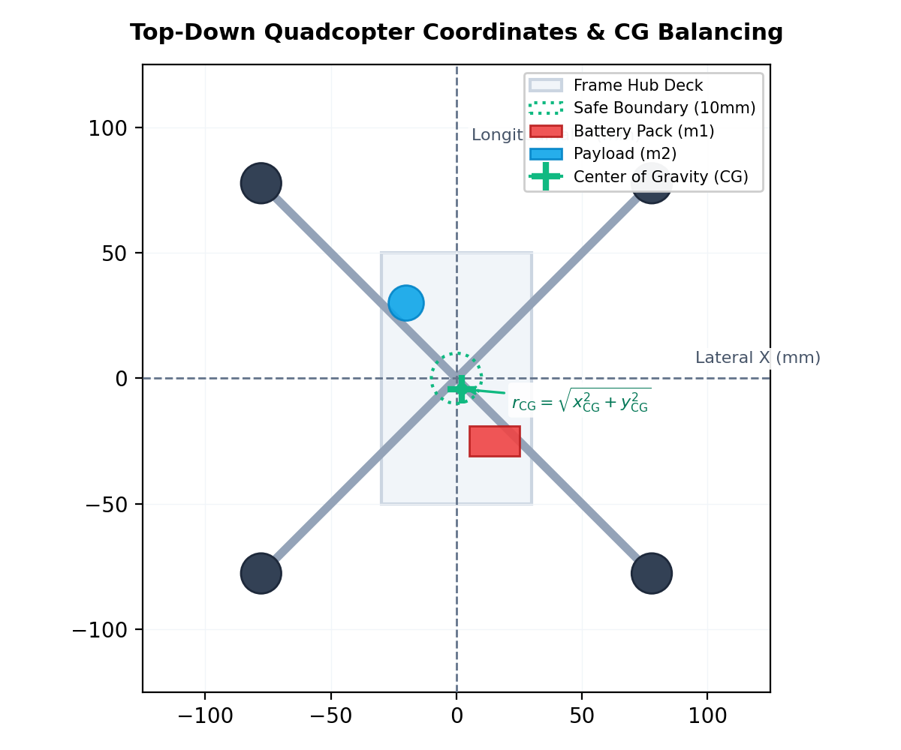
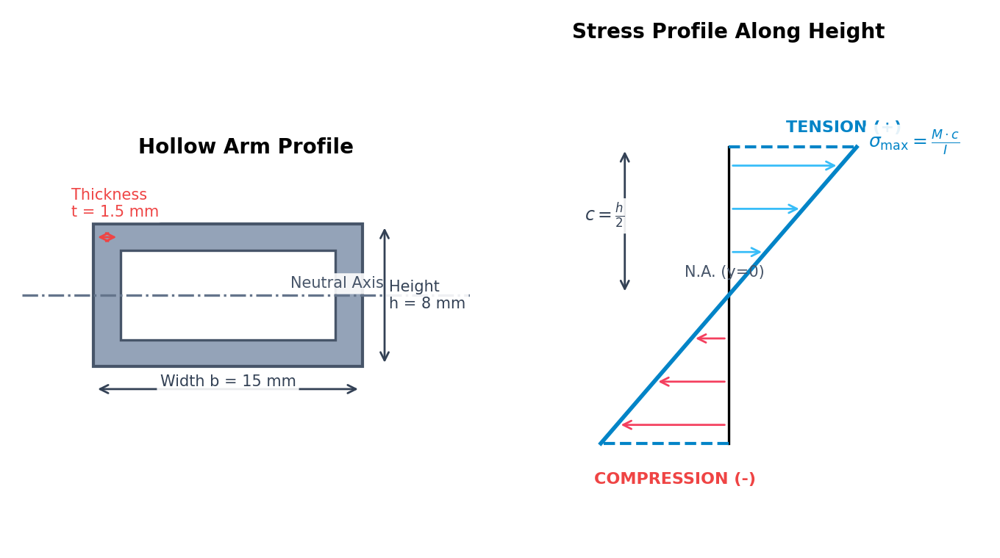

Frame Structural Integrity: Material Selection, CG Analysis & Arm Stress
Theoretical Derivations — Frame Structural Integrity
This document details the governing physical principles, centroid math, and beam mechanics equations used to evaluate drone balancing and structural load limits.
Before working through the derivations, the animation below walks through the structural story — locating the center of gravity, treating each arm as a loaded cantilever, and tracing how bending moment, stress, safety factor, and stiffness keep the frame intact.
1. Centroid & Center of Gravity (Sub-Calc A)
To ensure hover stability, the drone's center of mass must align with its geometric center (origin). In a Cartesian coordinate system, the Center of Gravity (CG) coordinates along the lateral (x) and longitudinal (y) axes are calculated using the centroid equations:
xCG = Σi=1n (mi · xi) ⁄ Σi=1n mi
yCG = Σi=1n (mi · yi) ⁄ Σi=1n mi
Where:
- mi is the mass of the individual component (g or kg).
- xi, yi are the coordinates of the component's center of mass relative to the geometric center (mm or m).
The total radial offset of the center of gravity (rCG) from the datum origin is solved using the Euclidean distance:
rCG = √(xCG2 + yCG2)
To prevent asymmetric motor heating and hover drift, we enforce the safety envelope:
rCG ≤ 10 mm
Worked example — CG offset of the reference 5″ build (cf_250 frame, 2204 motor, 5045 prop, 4S 2200 mAh battery). The four 2204 motors (25.0 g each), four 5045 props (3.1 g each), four 30 A ESCs (9.5 g each), the cf_250 frame (68.2 g), the F7 stack (7.5 g) and the ELRS receiver (3.5 g) all sit on the geometric centre, contributing 229.6 g with zero net moment. Three off-centre items break the symmetry: the 4S 2200 mAh battery (162.0 g) mounted 12 mm rear (y = −12 mm), the M9N GPS (24.5 g) 45 mm forward (y = +45 mm), and the 915 MHz telemetry radio (18.3 g) 35 mm to the right (x = +35 mm). The total mass is Σmi = 434.4 g.
xCG = (18.3 · 35) ⁄ 434.4 = 640.5 ⁄ 434.4 = 1.474 mm
yCG = (162.0 · (−12) + 24.5 · 45) ⁄ 434.4 = −841.5 ⁄ 434.4 = −1.937 mm
rCG = √(1.4742 + 1.9372) = √5.93 = 2.43 mm
The center of gravity lies 2.43 mm from the geometric centre — comfortably inside the rCG ≤ 10 mm envelope — so the build is balanced and the flight controller will not need to bias motor thrust to stay level.
The top-down coordinate offset and balancing layout is represented in the diagram below:

2. Cantilever Beam Bending Moment (Sub-Calc B)
Each of the four arms of the quadcopter acts as a cantilever beam—fixed at the central hub plate (root clamp) and free at the outer motor end (tip load). Under hover or full-throttle conditions, the forces acting on the arm tip (Ftip) are composed of:
- Gravitational Weight: The combined mass of the motor (Mmotor) and propeller (Mprop).
- Aerodynamic Thrust: The upward reaction force (Tmax) generated by the propeller.
Ftip = (Mmotor + Mprop) · g + Tmax
Where g = 9.80665 m/s2 is the acceleration due to gravity.
The bending moment M(x) at any distance x from the root clamp is the product of the force and the remaining span length:
M(x) = -Ftip · (L - x)
The maximum bending moment occurs at the clamped root (x = 0):
Mmax = -Ftip · L
Worked example — tip force and root moment of one cf_250 arm. Each arm carries a 2204 motor (Mmotor = 25.0 g) and a 5045 prop (Mprop = 3.1 g) and develops the simulator's full-throttle thrust Tmax = 8.5 N over a span L = 105 mm = 0.105 m:
Ftip = (0.0250 + 0.0031) · 9.80665 + 8.5 = 0.276 + 8.5 = 8.78 N
Mmax = −8.78 · 0.105 = −0.921 N·m
Aerodynamic thrust dominates the load: gravity contributes only 0.276 N (about 3%) of the 8.78 N tip force. The clamped root therefore experiences a hogging moment of magnitude 0.921 N·m, which Section 3 converts into fibre stress.
Where L is the total arm span length (meters). The shear force V(x) remains constant along the entire span:
V(x) = -Ftip
3. Flexural Bending Stress (Sub-Calc C)
The applied bending moment creates tensile stress on the upper fibers of the arm and compression stress on the lower fibers. The normal bending stress (σ) at any vertical distance y from the horizontal Neutral Axis is solved using the flexure formula:
σ(y) = (M · y) ⁄ I
The maximum bending stress (σmax) occurs at the outermost boundary fibers (y = ±c, where c = h/2):
σmax = (Mmax · c) ⁄ I = (Mmax · h) ⁄ 2 I
The cross-section and flexural stress distribution profiles are illustrated below:

Hollow Rectangular Area Moment of Inertia (I)
Quadcopter arms are typically manufactured as hollow tubes to save weight while maintaining stiffness. For a hollow rectangular cross-section of width b, height h, and wall thickness t, the area moment of inertia is derived by subtracting the void area from the outer rectangular envelope:
I = Iouter - Iinner = (b · h3) ⁄ 12 - ((b - 2t) · (h - 2t)3) ⁄ 12
Worked example — second moment of area and root stress of the cf_250 arm. The cf_250 arm tube has outer width b = 10 mm, height h = 6 mm and wall thickness t = 1 mm, so the inner void measures (b − 2t) = 8 mm by (h − 2t) = 4 mm (all converted to metres):
I = (0.010 · 0.0063) ⁄ 12 − (0.008 · 0.0043) ⁄ 12 = (2.16 × 10−9 − 5.12 × 10−10) ⁄ 12 = 1.373 × 10−10 m4
Carrying the root moment |Mmax| = 0.921 N·m from Section 2 to the outermost fibre (c = h/2 = 0.003 m):σmax = (0.921 · 0.003) ⁄ 1.373 × 10−10 = 2.01 × 107 Pa = 20.1 MPa
The outer fibres carry 20.1 MPa — tension on the top surface, compression on the bottom — which is far below the T700 carbon yield of 600 MPa, confirming the hollow section is stiff enough for this load.
4. Safety Factor & Structural Deflection (Sub-Calc D)
To determine if the selected arm material will yield under load, the maximum applied stress is compared to the material's yield strength (σyield). The Safety Factor (SF) is defined as:
SF = σyield ⁄ σapplied
- SF ≥ 2.0 (Safe): Strong structural headroom.
- 1.0 ≤ SF < 2.0 (Marginal): High risk of structural fatigue or permanent deformation under dynamic flight loads.
- SF < 1.0 (Fail): The applied stress exceeds the yield point, causing immediate mechanical failure (yielding/fracture).
Worked example — safety factor of the carbon-fibre arm. Comparing the T700 carbon yield strength σyield = 600 MPa with the applied root stress σapplied = 20.1 MPa from Section 3:
SF = 600 ⁄ 20.1 = 29.8
With SF = 29.8 ≥ 2.0 the arm sits firmly in the Safe band with large structural headroom — the carbon arm could withstand roughly 30× this thrust load before reaching its yield point.
Elastic Deflection Profile
The vertical deflection shape of the arm (y(x)) as a function of distance x from the clamp is modeled using the Euler-Bernoulli beam deflection equation:
y(x) = ((Ftip · x2) ⁄ (6 E I)) · (3L - x)
Worked example — tip deflection of the loaded cf_250 arm. Evaluated at the free tip (x = L = 0.105 m) the expression reduces to y(L) = Ftip · L3 ⁄ (3EI). Using Ftip = 8.78 N, carbon fibre E = 70 GPa = 70 × 109 Pa and I = 1.373 × 10−10 m4:
y(L) = (8.78 · 0.1053) ⁄ (3 · 70 × 109 · 1.373 × 10−10) = 3.52 × 10−4 m ≈ 0.35 mm
The rigid carbon arm deflects only 0.35 mm at full thrust. Since deflection scales as 1⁄E, the same load on a Nylon arm (E = 3.0 GPa) would bend about 23× further (≈ 8 mm), illustrating why Young's modulus governs flight-frame rigidity.
Where:
- E is the material's Young's Modulus (GPa), representing stiffness.
- I is the area moment of inertia (m4).
- x is the position along the span (0 ≤ x ≤ L).
This equation explains why Nylon (low Young's Modulus E = 3.0 GPa) experiences extreme deflection and yielding compared to Carbon Fibre (E = 70.0 GPa), which remains highly rigid under equivalent loads.